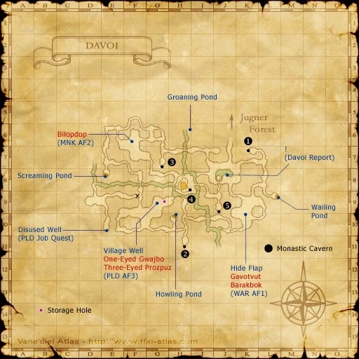

Level 75 reference · Zenith rules
|
Recommended: Level 60+ character, or level 50+ character with Sneak/Invisible, or party of 40+.
If you already have the 4 key items ( Crest of Davoi,
Crest of Davoi,  Yagudo Torch,
Yagudo Torch,  Coruscant rosary,
Coruscant rosary,  Black Matinee Necklace) from doing this mission for another nation, you can be just about any level, as long as you have Sneak (Silent Oil) and Invisible (Prism Powder).
Black Matinee Necklace) from doing this mission for another nation, you can be just about any level, as long as you have Sneak (Silent Oil) and Invisible (Prism Powder).
Walkthrough
Unlike most missions, this mission is not offered by a Gate Guard. This mission requires a certain level of Rank Bar. Complete repeatable missions or trade 3 stacks of crystals to a Conquest Overseer.
- Morlepiche (H-10) in the upper level of Ru'Lude Gardens will accept crystals.
Talk to your embassy's receptionist in Ru'Lude Gardens to begin the mission. Check your ambassador's office door. You will receive the  Archducal audience permit. Then check the Audience Chamber (H-6). You will receive the
Archducal audience permit. Then check the Audience Chamber (H-6). You will receive the  Letter to Aldo. Next talk to Aldo (J-8) in Lower Jeuno, inside Neptune's Spire Inn. You will receive a
Letter to Aldo. Next talk to Aldo (J-8) in Lower Jeuno, inside Neptune's Spire Inn. You will receive a  Silver bell.
Silver bell.
- To gain access to the Tenshodo HQ, obtain a
 Tenshodo Member's Card from the quest Tenshodo Membership or buy a Tenshodo Invite on the Auction House under Others > Misc and trade it to Ghebi Damomohe.
Tenshodo Member's Card from the quest Tenshodo Membership or buy a Tenshodo Invite on the Auction House under Others > Misc and trade it to Ghebi Damomohe.
Note: If currently on the Chains of Promathia mission A Vessel Without a Captain, its scene will appear first when interacting with the door. Talking to Aldo twice will be required after the cut-scene to prompt this mission's cut-scene.
Key Items
Obtain the following key items:
The key items may be obtained in any order. If you already have the key items, skip to the section labeled Magicite.
Note: With Poison Potions and a friend who has Tractor and all of the key items, the only key item that is strictly necessary is  Yagudo Torch.
Yagudo Torch.
Yagudo Torch
To obtain the  Yagudo Torch:
Yagudo Torch:
- Speak to Paya-Sabya (I-8) in Upper Jeuno.
- Speak Muckvix (H-9) in Lower Jeuno.
Crest of Davoi
To obtain the  Crest of Davoi (Key Item):
Crest of Davoi (Key Item):
- Talk to Baudin at the northwest corner of (G-8) in Upper Jeuno. He asks for Coeurl Meat.
- Coeurl Meat drops from all Coeurls, including Coeurl in Meriphataud Mountains. It can also be bought from the Auction House.
- Trade him the Coeurl Meat to obtain the Crest of Davoi. This completes the quest Crest of Davoi.
Black Matinee Necklace & Coruscant rosary
To obtain a  Black Matinee Necklace and
Black Matinee Necklace and  Coruscant rosary:
Coruscant rosary:
- Travel to Beadeaux. Quadav along the path go up to level 39 and aggro via sound. Players under level 55 will require Sneak.
- Enter Map 2 via exit A at (H-7).
- Receive Silence by examining The Mute at (G-7). This will allow you to pass by The Afflictor without becoming Cursed.
- Enter Map 1 via exit B at (F-8).
- Use the ramp at (E-10) to climb to the upper level.
- Defeat De'Vyu Headhunter (I-9). It will drop up to 4 Quadav Charms. You only need 1.
- Defeat Go'Bhu Gascon (F-6). It will drop up to 4 Quadav Augury Shells. Again, you only need 1.
Once you have both items, head back to Jeuno. Talk to Sattal-Mansal (J-8) in Lower Jeuno outside Aldo's room in the basement of Neptune's Spire.
- Trade him the Quadav Charm to obtain the Coruscant rosary. This completes the quest Mysteries of Beadeaux I.
- Trade him the Quadav Augury Shell to obtain the Black Matinee Necklace. This completes the quest Mysteries of Beadeaux II.
Magicite
The three magicite can be examined in any order.
Davoi


Image source
Travel to Davoi. Orcs along the path go up to level 39 and will aggro via sight to players under level 55 unless they are Invisible. Wolf Bats are level 25-29 and will aggro players via sound under level 43 unless they are sneaked.
- Disable the Wall of Dark Arts (G-7). Continue into Monastic Cavern.
- A friend with the Crest of Davoi can Tractor you through the Wall.
- A friend with the
- Check the Magicite at the end of the hall. You will receive the Magicite: Optistone.
Beadeaux
Travel to Beadeaux. Quadav along the path go up to level 28 and will aggro players via sound who are under level 42, unless they are sneaked.
- Enter Map 2 via exit A at (H-7).
- Enter Qulun Dome at (I-7).
- Open the door. If you get the message "The Silver bell, Coruscant rosary, Black Matinee Necklace, glow faintly." then move closer and try again.
- A friend with the Silver bell, Coruscant rosary, and Black Matinee Necklace can Tractor you through the door. As there are no mobs in Qulun Dome, you will need to use Poison Potions to kill yourself first.
- A friend with the
- Check the Magicite at the end of the hall. You will receive the Magicite: Aurastone.
Castle Oztroja
Travel to Castle Oztroja. Yagudo along the path go up to level 49 and will aggro players via sight, if they are under level 68, unless they are invisible. Bats will also aggro via sound unless players are sneaked.
- Go through the door at (I-8) to reach Map 3.
- One lever opens the door, and the other triggers the trapdoor. You will not be able to throw a lever unless you are standing on the trapdoor. The correct lever changes every Vana'diel day. Note: Since there is a significant delay, an easy way to avoid the trap is to throw a lever and then immediately run off the trapdoor.
- Enter Map 7 via exit F at (G-7).
- Enter Map 2 via exit I at (I-7).
- Light the Yagudo Torch at (H-9/10) to open the Brass Door.
- Open the Brass Door at (G-10). Continue into Altar Room.
- If you spoke to Paya-Sabya and Muckvix, you will get a cutscene with Fickblix. If you are repeating this mission and you skipped those two, this cutscene will be skipped.
- Check the Magicite at the end of the hall. You will receive the Magicite: Orastone.
Return to Jeuno
Once you have collected all the Magicites, return to the Audience Chamber (H-6) in Ru'Lude Gardens. You will receive an  Airship pass.
Airship pass.
- If you already have an Airship pass, you will receive 20,000 gil instead.
Return to your embassy's receptionist to complete the mission. You will receive Rank 5,  Message to Jeuno, and 10,000 gil.
Message to Jeuno, and 10,000 gil.
- Mission 5-1 will begin immediately. You will not be able to change allegiance until you complete 5-1 or reject the mission offer in the following cutscene.
Game Description
- Mission Orders
- Capture the three magicites in Davoi, Beadeaux, and Castle Oztroja to prevent the Shadow Lord's return.
Adapted from Eden Wiki: Magicite (Windurst) · Contributors and history · CC BY-SA 4.0. Revision 8566. Layout, links and optional background text adapted for Zenith.